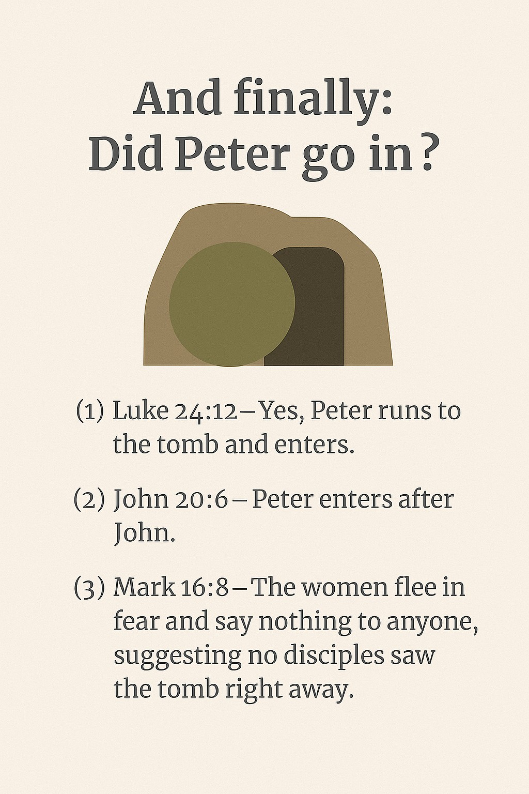
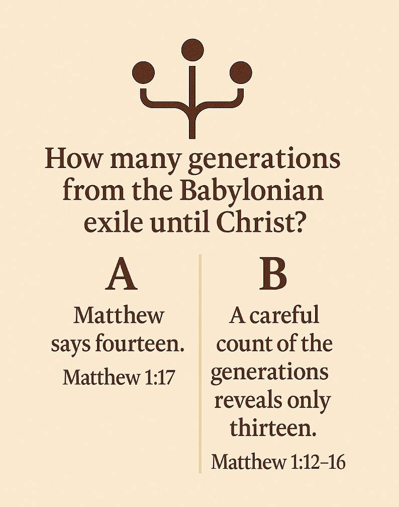
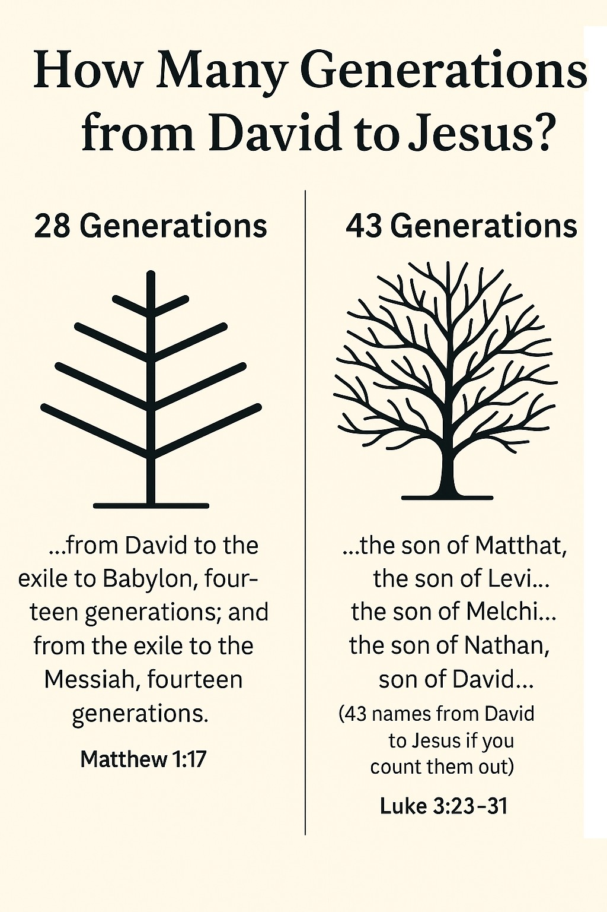

PART ONE: THE CONTRADICTIONS
To begin, let's warm up with a few small, relatively minor contradictions, before we get into anything too sticky.
Contradiction Number 1: Beersheba
In Genesis 21:31, it clearly says Abraham gave it that name after he made a covenant with Abimelek over a disputed well. But then in Genesis 26:33, it says Isaac gave the city the same name after his own encounter with Abimelek—again involving a well. So, who did it first? Did both name it independently? Did the name somehow get "re-named"? While this may seem like a small detail, it taps into a bigger issue: biblical consistency, especially in stories meant to show how God worked through specific patriarchs. Theologically, it doesn't shake core doctrines, but it does raise questions about historical accuracy and editorial stitching in the text—especially if both accounts are meant to be historically literal.
Contradiction Number 2: King Jehoiachin's Age
According to 2 Chronicles 36:9, he was 8 years old. But in 2 Kings 24:8, it says he was 18 years old. That's a huge difference—ten years is no small error when you're talking about whether a child or a young adult was ruling a kingdom. This contradiction has minor theological significance but raises real concerns for people who view Scripture as inerrant down to every word and number. Critics argue that this discrepancy reveals how historical books may have been copied or edited over time with occasional numerical mistakes. Defenders of the Bible often try to "explain it away" by suggesting the Chronicler's version (8 years old) is a copyist's error—the Hebrew characters for 8 (שׁמֹנֶה) and 18 (שְׁמֹנֶה־עֶשְׂרֵה) are very similar and may have been misread by a scribe. Others argue that Jehoiachin may have been made co-regent at 8 and became full king at 18, although there's no strong textual support for that theory. Either way, it paints a picture of fragile bible texts where seemingly simple details don't align.
Contradiction Number 3: Jesus' Lineage
This contradiction appears in the genealogies of Jesus found in the Gospels of Matthew and Luke. Amazingly, most churchgoers are unaware this one even exists! Matthew 1:6 traces Jesus' lineage through Solomon, the royal son of David, which fits a narrative of kingship. But Luke 3:31 traces it instead through Nathan, another son of David who never ruled as king. Both can't be biologically correct if taken literally — so which is it? Theologically, this matters because Messianic prophecy was thought to require descent from David, often interpreted to mean through the royal line. Some try to reconcile the two by saying Matthew gives Joseph's LEGAL line, while Luke gives Mary's biological line (with Heli as Mary's father and Joseph's father-in-law), despite the lack of evidece for this. Others propose the genealogies are symbolic, not historical. But there's no indication in either gospel that the genealogy is metaphorical — both present them as straightforward history. So, unless one adopts a fancy workaround, this is a sticky one. Unfortunately, it gets worse in the next contradiction.
Contradiction Number 4: Royal Disqualification
The issue of Jesus' royal line deepens into another thorny issue: Can Jesus inherit David's throne if one of his ancestors was cursed by Yahweh to never have a descendant sit on it?
In Luke 1:32, the angel Gabriel declares that Jesus will be given "the throne of his father David", fulfilling a major Messianic prophecy.
But there's a snag.
According to Matthew 1:11 and 1 Chronicles 3:16, Jesus is descended (through Joseph's line) from Jehoiakim, a king whom Yahweh curses in Jeremiah 36:30, saying that none of his descendants will sit on David's throne.
That seems to be a direct block to Jesus' claim—if he's biologically tied to Jehoiakim, the curse would disqualify him from the throne.
Some apologists try to resolve this by saying Jesus wasn't Joseph's biological son (thus avoiding the curse—Mary was conceived by the Holy Spirit, remember?), or that Luke's genealogy represents Mary's line, which bypasses Jehoiakim entirely.
But both solutions are speculative and not explicitly stated in the text.
Also, both lines pass through Joseph anyway, so the legal argument remains thin at best.
If we take the genealogies and prophecies at face value, this becomes a genuine theological headache.
Incidentally, the same curse was pronounced on Jehoiakim's son, Jehoiachin (also known as Jeconiah or Coniah) in Jeremiah 22:30. So a double-curse if you like.
Contradiction Number 5: Joseph's Father
This previous contradiction flows into the next one, which was already implied (and even stated): Who was Joseph's father? According to Matthew 1:16, it was Jacob, but Luke 3:23 says it was Heli. Obviously, Joseph couldn't have had two biological fathers, so something doesn't add up. This matters more than it first seems because these genealogies are often used to validate Jesus' Messianic credentials—tracing him legally or biologically back to King David.
To explain the discrepancy, some propose that Matthew traces the legal line (as stated previously perhaps via adoption or inheritance laws), while Luke gives the biological line, possibly through Mary (making Heli her father, and Joseph his son-in-law). But the text in Luke doesn't say anything about Mary—it clearly says Joseph was the son of Heli. Others suggest that one genealogy uses levirate marriage logic, where a man legally becomes the child of his mother's second husband if the first died without issue. These workarounds exist—but they rely on speculation rather than textual clarity. For readers who expect clean historical records, this starts to get awkward.
Contradiction Number 6: Shelah's Father
This one's easy to miss but highlights how even seemingly minor names can trigger big questions. In Genesis 10:24 and Genesis 11:12, Shelah is the son of Arphaxad. But in Luke 3:35-36, Luke inserts an extra generation: Shelah is the son of Cainan, who is the son of Arphaxad. This causes a problem not only for biblical consistency but also for how genealogies were preserved and transmitted.
It's not just a typo - the name Cainan appears nowhere in the Hebrew Old Testament manuscripts but does appear in some versions of the Septuagint, the Greek Old Testament. Some argue Luke was simply quoting from that Greek source, while others say Cainan may have been added to Luke's genealogy by later copyists. Theologically, this isn't earth-shattering - it doesn't affect doctrine - but it does chip away at the idea that genealogical records in the Bible are infallible or immune from scribal insertions.
Contradiction Number 7: Absalom
This contradiction shows up in the genealogical listings of King David's sons. In 2 Samuel 3:3, Absalom is listed as David's third son, born to Maacah, the daughter of Talmai, king of Geshur. But over in 1 Chronicles 3:2, Absalom is listed as the fourth son, with the same mother. So which is it - third or fourth?
This isn't just a clerical detail; it matters because biblical genealogies were seen as signs of divine order, royal succession, and legitimacy. If Absalom was the third son, his eventual rebellion and claim to the throne carries different implications than if he was the fourth. Those trying to smooth this over often argue that one of the earlier sons might have died young or been excluded for some reason, which shifted the ranking by the time Chronicles was compiled. Others suggest that the chronicler may have inserted an extra name, or that the writer of Samuel simply omitted someone. Either way, it reflects the occasional messiness in biblical record-keeping - especially when multiple sources were later merged to produce the canon we have today.
Contradiction Number 8: How Many Demoniacs?
Matthew 8:28 says there were two demon-possessed men that Jesus healed in the region of the Gadarenes, while both Mark 5:2 and Luke 8:27 only mention one.
So, was it one man or two?
It might seem like a small detail, but it raises a bigger question about how the Gospel writers remembered or chose to tell the same event differently.
Theologically, it doesn't shake the core of Christian belief—Jesus still heals and shows power over evil—but it does matter for people who view the Bible as inerrant and expect every detail to align.
Those trying to resolve the contradiction usually say Mark and Luke just focused on the more vocal or dramatic demoniac, the "main character," while Matthew includes both.
But skeptics ask: if every word is divinely inspired, why leave one guy out—or add an extra one in?
It's one of those moments where you have to ask whether the Gospel writers were reporters, editors, or storytellers with specific emphases.
Contradiction Number 9: Famine Years
This contradiction is about a punishment option God gave King David after he conducted a census against divine instruction.
In 2 Samuel 24:13, the prophet Gad tells David he can choose "seven years of famine" as one of the possible consequences.
But in the parallel account, 1 Chronicles 21:12, the same choice is listed as only "three years of famine."
So which was it—seven or three?
This isn't just a typo; it affects how we view the severity of divine judgment and the consistency of biblical records.
Theologically, it raises questions about the reliability of the text in recounting divine actions.
To explain it away, some scholars argue that a copyist error might have crept into the text of Samuel—especially since three years is consistent with other famine durations in Scripture (like the one in Elijah's time).
Others suggest the chronicler "corrected" the number to better align with common prophetic symbolism.
Still, for those who believe in the inerrancy of Scripture, this difference needs smoothing over—while others see it as a glimpse into how sacred texts were edited over time.
Contradiction Number 10: Flight to Egypt
This contradiction shows up when you compare how Matthew and Luke describe what happened right after Jesus was born.
In Matthew 2:13-16, Joseph is warned in a dream to flee to Egypt because Herod wants to kill the child. So the family takes off and stays there until Herod dies.
But Luke 2:21-39 tells a completely different story: after Jesus is born, the family goes to Jerusalem to perform temple purification rites, then returns peacefully to Nazareth—no Egypt, no warning, no massacre.
Theologically, this contradiction can be pretty significant. The flight to Egypt is often cited as a fulfillment of prophecy, which is what Matthew specifically states quoting Hosea 11:1:
"Out of Egypt I called my son."
In context, Hosea is referring to Israel being brought out of Egypt during the Exodus—not a future Messiah. It's a historical reference, not a predictive prophecy.
However, Matthew reinterprets it typologically, presenting Jesus as a new Israel or a new Moses, re-living Israel's journey. This approach—using typology rather than strict prediction—is common in Matthew's Gospel and is part of a broader strategy to show Jesus as the fulfillment of Hebrew scripture, sometimes in ways that reframe the original meaning.
Luke's version emphasizes Jewish law and ritual purity.
Trying to explain it away, some suggest the family first went to Jerusalem, then fled to Egypt, and later returned to Nazareth—but Luke's account implies a smooth, uninterrupted return from the temple.
The two stories don't just differ—they follow completely incompatible timelines, suggesting either a major omission in one Gospel or an irreconcilable narrative tension between them.
Contradiction Number 11: After Baptism?
This contradiction deals with what happened immediately after Jesus was baptized—and the timelines simply don't line up.
In Matthew 4:1-2, Jesus is led by the Spirit into the wilderness for 40 days, fasting and being tempted by Satan. It sounds like this happens right after his baptism.
But in John 1:29-2:1, a very different sequence unfolds:
- John the Baptist sees Jesus the next day,
- then again the day after that,
- and then on the third day, Jesus is already in Cana attending a wedding and turning water into wine.
That would mean he never went to the wilderness at all—or at least not right away.
Some try to harmonize the accounts by suggesting that John skips the wilderness entirely, assuming it happened off-camera. But John is careful with his day-by-day timeline, and his Gospel gives no indication that 40 days are missing.
Theologically, this contradiction affects our understanding of the launch of Jesus' public ministry.
Did it begin in solitude and struggle, as in the Synoptics (Matthew, Mark and Luke)? Or in celebration and signs, as in John?
Trying to combine them turns the timeline into a theological juggling act, with no clear resolution unless you're willing to accept that the Gospel writers may have been telling theologically motivated stories, not synchronized history.
Contradiction Number 12: Jesus-Jerusalem Timeline
What was the sequence of events surrounding Jesus' final entry into Jerusalem?
Did he go to Bethany before or after entering the city and visiting the temple?
In Matthew 21:1-17, the sequence is:
- Jesus approaches Bethphage,
- enters Jerusalem,
- goes to the temple,
- overturns tables,
- heals,
- and then goes to Bethany to stay the night.
In contrast, John 12:1-12 places Jesus in Bethany first, where he dines with Lazarus and Mary, and only afterward does he enter Jerusalem the next day to palm branches and cheering crowds. The timelines are reversed.
This contradiction is more than just a scheduling glitch. It reshapes how we see the tone and momentum of the final days of Jesus' life.
Matthew presents a dramatic temple confrontation as Jesus' first move once he arrives, emphasizing his authority and judgment.
But John sets a different mood: a quiet meal among friends before a celebratory public entry.
Some try to smooth this out by suggesting Jesus may have gone back and forth multiple times between Bethany and Jerusalem—a real possibility since the two towns were only a few kilometers apart.
Still, the order of events in each Gospel is so deliberate and narratively tight that it seems each writer was crafting a distinct theological arc, not simply giving a historical itinerary.
For readers seeking a strict timeline, this creates yet another tension in harmonizing the Gospels.
Contradiction Number 13: Peter's mother-in-law's healing
Who was present when Jesus healed Peter's mother-in-law?
- Mark 1:29-31 – Jesus, James, and John go with him to the house.
- Luke 4:38-39 – Jesus goes alone, and only Simon is mentioned.
This contradiction is easy to miss unless you're comparing Gospel accounts closely. It's about who was actually present when Jesus healed Peter's mother-in-law.
In Mark 1:29-31, Jesus enters Simon and Andrew's house, and He's not alone—James and John go with Him.
But in Luke 4:38-39, Jesus enters Simon's house seemingly by himself—there's no mention of Andrew, James, or John.
At first glance, this may seem like a small detail. But in the broader discussion of Gospel reliability, even these little inconsistencies raise questions about whether we're reading eyewitness testimony or edited theological storytelling.
Some defenders argue that Luke may have just omitted the others to keep the focus on Jesus' healing act. Others suggest the presence or absence of disciples wasn't Luke's concern.
Still, if both writers are describing the same moment, you'd expect a consistent cast of characters—especially when it involves core disciples like James and John.
So while the theological stakes here are minor, the contradiction is another example of how even simple narrative details don't always line up across the Gospels.
Contradiction Number 14: Law of Moses
In Matthew 5:17-19, Jesus states clearly: "Do not think that I have come to abolish the Law or the Prophets… not the smallest letter will disappear from the Law until everything is accomplished." He even warns that anyone who relaxes the commandments will be called least in the Kingdom of Heaven. But in Ephesians 2:15, attributed to Paul, says something very different: that Christ "abolished in his flesh the law with its commandments and regulations." That's a bold, direct contradiction - Jesus says the Law stands, Paul says it was taken down at the cross.
Theologically, this is a massive deal. If you're building doctrine on the teachings of Jesus, you might say that the Law is still relevant. [If you've read "Liberating Humanity: How Jesus Exposed the Evil God of Moses and Warned of Paul" in the same book series, you'll know that Jesus was actually referring to a higher Law not the Mosaic Law with its blatantly evil commands and blood sacrifices.] But if you're following Paul's message to Gentiles, then the Law was a temporary structure now torn down. Defenders try to resolve the contradiction by saying Jesus fulfilled the Law, meaning its obligations were completed in Him, and that Paul is simply describing the shift from the Old Covenant to the New. But Jesus' own words in Matthew don't suggest the Law is over - in fact, He says not even a jot or tittle will pass away. Which is very confusing if you assume he was talking of the Mosaic Law. This tension sits at the heart of Christian theology: Jesus' apparent affirmation of Jewish law (taking the written text at face value) vs. Paul's sweeping dismissal of it. It's one of the most debated and consequential contradictions in the entire Bible.
Contradiction Number 15: Faith vs Works
In Ephesians 2:8-9, Paul says salvation comes "by grace through faith… not by works, so that no one can boast." That's a strong "faith alone" position - human effort doesn't save you. But in James 2:24, we get the exact opposite: "You see that a person is justified by what he does and not by faith alone." In fact, James directly references Abraham and says his faith was made complete by what he did. It's one of the most direct and pointed contradictions in the entire New Testament.
Theologically, this one is huge. It strikes at the heart of how salvation works - a topic that split the church in the Reformation and still divides traditions today. Martin Luther famously called James "an epistle of straw" because of this very passage. Some argue the two authors were using the word "justified" differently - Paul talking about initial salvation before God, and James talking about outward evidence before people and what happens after your initial act of faith. Others claim Paul was warning against legalism, while James was attacking empty belief. But even with those explanations, the phrasing is so stark - one says not by works, the other says not by faith alone - that the tension is difficult to dismiss.
Contradiction Number 16: Entry into Eternal Life
In Matthew 19:17, Jesus says: "If you want to enter life, keep the commandments." It's a clear statement tying eternal life to obedience - especially the moral commands from the Law. But then Romans 6:23 flips the script: "The wages of sin is death, but the gift of God is eternal life in Christ Jesus our Lord." This implies salvation is not earned by commandment-keeping but received freely as a gift - even by those who've sinned.
This contradiction gets to the heart of how righteousness is obtained. Jesus appears to teach a works-based path to life (at least initially), while Paul repeatedly emphasizes grace over law. Apologists often argue that Jesus was speaking to a man still under the Old Covenant, while Paul was preaching after the cross. Others say Jesus was testing the man's heart, not giving a formula for salvation. But that reading requires a lot of interpretive gymnastics - especially when Jesus plainly ties life to commandment observance. The broader tension remains: Is salvation about obedience, or grace? Could Paul have been the leading false teacher about whom Jesus warned who would undermine Jesus teachings directly. [This is discussed in "Liberating Humanity: How Jesus Exposed the Evil God of Moses and Warned of Paul" in the same book series.]
Contradiction Number 17: You Fool
In Matthew 5:22, Jesus gives a stern warning: "Anyone who says, 'You fool!' will be in danger of the fire of hell." It's part of His famous Sermon on the Mount, where He elevates the seriousness of even casual insults. But elsewhere, Jesus and even God seem to use that exact language freely. In Matthew 23:17, Jesus says to the Pharisees: "You blind fools!" And in Psalm 14:1, it says: "The fool says in his heart, 'There is no God.'" So is "fool" forbidden - or fair game?
This contradiction raises important questions about consistency and context. Some argue Jesus was only condemning "fool" when said in anger or contempt, not in situations of spiritual judgment or irony. Others say that the word translated "fool" may carry different shades of meaning depending on the situation. Still, the warning in Matthew 5 is pretty absolute - it links the use of the term directly to hellfire. If Jesus can use it later without any problem, it blurs the line between righteous judgment and hypocrisy. For those trying to follow Jesus' moral example to the letter, it's a troubling inconsistency, at minimum.
Contradiction Number 18: Anger
In Matthew 5:22, Jesus says: "Anyone who is angry with a brother or sister will be subject to judgment." That suggests all anger, even internal, is spiritually dangerous. But in Ephesians 4:26, Paul says: "Be angry, but do not sin." In other words, anger itself isn't the problem - it's how you handle it.
So which is it? Is anger inherently sinful, or can it be morally neutral - even righteous? This contradiction goes to the heart of Christian emotional ethics. Some argue Jesus was speaking hyperbolically to get at the root attitude behind violence, while Paul was offering practical guidance about how to manage natural emotions. Others propose that Jesus was referring to sustained, hateful anger, while Paul was talking about brief emotional flare-ups that don't lead to sin. But those explanations aren't built into the text - they're interpretations trying to harmonize two different voices. At the very least, they point to a shift in tone and nuance between Jesus' Sermon on the Mount and Paul's pastoral letters. For modern Christians trying to navigate their emotional lives, the takeaway depends on which voice they treat as primary.
Contradiction Number 19: Eating Animal Blood
In Leviticus 17:10-14, the answer is an emphatic no. The text states that anyone - native-born or foreigner - who eats blood will be cut off from the people, because "the life of a creature is in the blood." It's a blanket prohibition with no exceptions. But in Deuteronomy 12:15-16, the rule appears more relaxed. It permits the eating of meat from clean animals, as long as the blood is poured out on the ground like water - implying that the issue isn't the eating of meat per se, but proper handling of the blood.
This raises a clear contradiction in practice: Is eating meat that once contained blood still forbidden outright, or allowed with the right procedure? Theologically, this touches on ritual purity, life symbolism, and evolving interpretations of holiness. Some scholars suggest Deuteronomy reflects a more practical, lenient law designed for a dispersed people no longer worshiping at a single centralized tabernacle. Others try to reconcile the two by saying Leviticus banned drinking or cooking with blood, while Deuteronomy just regulates it in non-sacrificial meals. Still, the tone in Leviticus is strict and absolute, while Deuteronomy sounds conditional and case-based. For anyone seeking a unified biblical dietary law, this contradiction remains a thorny one.
Contradiction Number 20: Signs
In Mark 8:12, Jesus says flatly, "No sign will be given to this generation." That sounds like a hard refusal. But in Matthew 12:39-40, Jesus offers "the sign of the prophet Jonah" - a symbolic reference to His death and resurrection after three days. Then in John 20:30, the narrative directly contradicts both statements: "Jesus performed many other signs in the presence of his disciples…" So which is it - no signs, one sign, or many signs?
This contradiction is especially noticeable because it involves Jesus' public proof of identity - a central concern of the Gospels. Some defenders argue that "no sign" refers to what the Pharisees were demanding on the spot, not to signs in general. Others say the "sign of Jonah" was a prophetic metaphor, not a miracle in the moment. Still, John's Gospel emphasizes that Jesus did many signs specifically to inspire belief, suggesting the author had a different agenda than Mark. These aren't just variations in detail - they reflect competing theological portraits of how Jesus validated His message: through refusal, prophecy, or abundant miraculous acts.
Contradiction Number 21: Healing the blind
In Matthew 20:29-30, it says Jesus healed two blind men as He was leaving Jericho. But in Mark 10:46-52 and Luke 18:35-43, only one blind man is mentioned - Bartimaeus, in Mark's version. Not only is the number different, but the location in the sequence varies too: Luke says it happened as Jesus was approaching Jericho, while Matthew says it happened as He was leaving.
This contradiction highlights the inconsistencies in the Gospels' miracle accounts. Some apologists argue that there may have been two blind men, and Mark/Luke just chose to highlight one (perhaps the more vocal or well-known). Others propose that multiple events happened at different times near Jericho - but the stories are too similar to ignore the overlap. Critics note that these discrepancies reflect the authors' theological storytelling rather than strict history. Either way, this shows how Gospel writers sometimes diverge - even when describing the same miracle.
Contradiction Number 22: Water from Rock at Rephidim or Kadesh?
Where did Moses strike the rock to bring out water - Rephidim or Kadesh? In Exodus 17:1-7, during Israel's early wilderness journey, the people camp at Rephidim. There, Moses strikes a rock (by God's command), and water gushes out to quench the people's thirst. Later, in Numbers 20:1-13, a strikingly similar event happens - but this time at Kadesh. God tells Moses to speak to the rock, but Moses instead strikes it (twice), and water still flows - though Moses is punished for disobedience.
Some say these are two separate events - one early in the Exodus, one near the end. Others believe they are two versions of the same story told in different traditions, with names and details reshaped. Either way, it raises the question: was there one miraculous water-from-a-rock event, or two? And did it happen as commanded or in disobedience? The theological implications include Moses' leadership, God's justice, and whether the narrative is literal history or a layered tradition. The details are too similar to ignore - but too different to easily harmonize.
Contradiction Number 23: Potter's field
Who bought the field of blood - the chief priests or Judas? Matthew 27:6-7 - The chief priests use the silver coins returned by Judas to buy the "potter's field," called the Field of Blood. Acts 1:18-19 - Judas himself bought a field with the reward he received, then died gruesomely in it.
This contradiction causes problems for the internal consistency of the New Testament. Did Judas buy the field with the money he received for betraying Jesus, or did he return the money and have nothing to do with the purchase? In Matthew, Judas shows remorse, throws the silver into the temple, and hangs himself. The priests use the money - which they say is "blood money" - to buy a burial field. In Acts, though, Judas seemingly uses the money himself to buy the field and dies by falling and bursting open - a very different ending.
Defenders of biblical harmony try to merge the two stories: they say Judas returned the money, and the priests bought the field in his name - legally attributing the purchase to him. Others say the two death accounts describe the same event from different angles (hanging followed by a fall). But these require a lot of interpolation. The narratives as written don't support a clean merger, and the field's ownership is attributed to different parties in each account - which presents a serious contradiction in a moment of deep theological weight.
Contradiction Number 24: Time of Crucifixion
What time was Jesus crucified - the third hour or the sixth hour? Mark 15:25 says it was the third hour (around 9 a.m.) when Jesus was crucified. John 19:14 says Jesus was still before Pilate at about the sixth hour (around noon), meaning the crucifixion hadn't happened yet.
This contradiction matters because it involves a core historical moment - the very hour of Jesus' death. The Synoptic Gospels (like Mark) put the crucifixion earlier in the morning, while John seems to delay the timeline. Some scholars argue that the Gospels may have been using different time-keeping systems - perhaps Mark using Jewish reckoning (starting the day at sunrise), and John using Roman reckoning (starting at midnight). But there's no solid textual evidence that John is using a Roman system - and even if he were, the timing still doesn't quite line up. The more likely explanation is that each Gospel writer was crafting a theological narrative: Mark emphasizes Jesus as the suffering Messiah from early on, while John seems to frame Jesus' condemnation as happening at the same time the Passover lambs were being prepared - just before noon. Either way, it's a clear tension between historical detail and theological storytelling.
Contradiction Number 25: Jesus' Last Words
What were Jesus' last words before He died? The Gospels each record different final sayings:
- Matthew 27:46 & Mark 15:34 - Jesus cries out: "My God, my God, why have you forsaken me?"
- Luke 23:46 - Jesus says: "Father, into your hands I commit my spirit."
- John 19:30 - Jesus declares: "It is finished."
Each of these is presented as the final moment - the last utterance before His death. But clearly, they can't all be the final words. This contradiction is not just about chronology, but about the emotional and theological framing of Jesus' death. Is His final moment one of despair, peaceful surrender, or triumphant completion?
Some suggest Jesus may have said all three statements, but that each Gospel chose to highlight only one. Yet, each writer appears to present their version as the definitive closing line. These differences reflect how each Gospel author shaped Jesus' death scene to match their theological emphasis: Matthew and Mark show a suffering Messiah, Luke shows trust and divine connection, while John portrays a victorious, purposeful ending. The contradiction may not shake belief in the crucifixion itself, but it does show how each Gospel tells the story differently, even at its most climactic moment.
Contradiction Number 26: Simon of Cyrene
Who carried the cross - Jesus or Simon of Cyrene? John 19:17 says Jesus carried His own cross to the place of execution. Matthew 27:32, Mark 15:21, and Luke 23:26 all say Simon of Cyrene was compelled to carry it.
This contradiction becomes glaring when you try to visualize the scene: either Jesus bore the entire weight of the cross from Pilate to Golgotha, or Simon stepped in to carry it - it can't be both simultaneously. Some try to resolve this by suggesting that Jesus started out carrying it, but was too weak, and Simon took over partway. That's plausible, but again, the text doesn't say that. John gives no hint of a handoff, and the Synoptic Gospels don't say Jesus carried it at all - only Simon. Theologically, this speaks to the suffering and humanity of Jesus. John's version emphasizes Jesus' control and purpose, while the Synoptics stress His physical weakness and burden. The tension between the two reflects broader differences in how each Gospel presents the crucifixion narrative.
Contradiction Number 27: Sacrifices
Does God delight in sacrifices, or reject them? Leviticus 1:9 - Sacrifices are described as a "pleasing aroma to the LORD." Psalm 51:16-17 - David says: "You do not delight in sacrifice, or I would bring it… The sacrifices of God are a broken spirit."
This contradiction strikes at the heart of how we understand God's relationship with religious rituals. In Leviticus, sacrifices are repeatedly affirmed as divinely instituted, with each burnt offering bringing "a pleasing aroma" to God. But in Psalm 51, often attributed to David after his sin with Bathsheba, the tone changes dramatically - it's not the sacrifice God wants, but repentance and humility.
Some resolve this by saying Leviticus outlines external ritual law, while Psalm 51 speaks to inner spiritual priorities. Others argue that the Psalm was written after the Temple system, pointing toward a shift from ritualism to internal devotion. Still, taken at face value, these are opposing statements: one affirms that God is pleased by sacrifices; the other flatly denies that they're what He desires. This contradiction reveals the evolution of biblical theology - from ritual-based law toward a more heart-centered understanding of what pleases God.
Contradiction Number 28: Resurrection discovery 01
How many women were at the tomb? The resurrection narratives across the Gospels vary wildly in terms of who was present, what they saw, and in what order things happened:
- Matthew 28:1 - Mary Magdalene and "the other Mary" go to the tomb.
- Mark 16:1 - Mary Magdalene, Mary the mother of James, and Salome visit the tomb.
- Luke 24:10 - Names Mary Magdalene, Joanna, Mary the mother of James, and others.
- John 20:1 - Only Mary Magdalene is mentioned as going to the tomb.
How many women went to the tomb on Easter morning? The Gospels don't agree. John 20:1 mentions only Mary Magdalene, alone. Matthew 28:1 says it was Mary Magdalene and "the other Mary." Mark 16:1 expands the list to include Salome, making it three women, and Luke 24:10 names Mary Magdalene, Joanna, Mary the mother of James, and even mentions "other women with them." These differences are more than just name-dropping; they reflect contradictory portrayals of who was actually present at one of the most critical moments in Christian history.
Apologists often say that all these women were there, and the different writers just mentioned some and not others. But if that were the case, we'd expect some consistency or acknowledgment of a larger group. Instead, each Gospel presents its list as complete and authoritative. This inconsistency calls into question the historical reliability of the resurrection narrative, and suggests the stories were shaped to suit theological or literary goals, not to provide a unified, eyewitness report.
Contradiction Number 29: Resurrection discovery 02
Then there's the question of who they saw:
- Matthew 28:2-5 - One angel, outside the tomb.
- Mark 16:5 - One young man, inside the tomb.
- Luke 24:4 - Two men in dazzling clothes, inside.
- John 20:11-12 - Two angels, sitting inside the tomb.
Who did the women see at the tomb - one angel, two angels, or a man? In Matthew 28:2-5, an angel of the Lord descends, rolls back the stone, and speaks to the women - clearly one angel, outside the tomb. In Mark 16:5, the women see a young man in a white robe inside the tomb. In Luke 24:4, they see two men in dazzling clothes, and in John 20:11-12, Mary sees two angels inside the tomb. These accounts conflict not only in how many beings appeared, but also in what they were (angel vs. man), where they were (inside vs. outside), and how they acted (sitting, speaking, silent).
Some suggest the different authors were emphasizing different parts of the event or describing angelic figures in human terms. But taken at face value, these are distinct, incompatible descriptions of what should have been a single, dramatic moment. The inconsistency challenges the idea of the Gospels being eyewitness accounts of a shared event - especially one as pivotal as the resurrection.
Contradiction Number 30: Who saw Jesus first
Who saw the risen Jesus first? In John 20:14-17, it is clearly Mary Magdalene alone who first sees and speaks with the risen Jesus. But in Matthew 28:9, it's Mary Magdalene and "the other Mary" who meet Jesus together. Mark 16:9 also mentions Mary Magdalene as the first, but this section is part of the disputed longer ending. Meanwhile, Luke 24:10 mentions Mary Magdalene, Joanna, Mary the mother of James, and other women as discovering the empty tomb - but they don't see Jesus, just angels.
These differences reflect shifting oral traditions and theological emphases: John highlights personal intimacy, Matthew shows a pair, and Luke focuses on group witness to the empty tomb. Apologists often try to harmonize by claiming multiple appearances, but each Gospel presents its version as the definitive first encounter, not just one of many. This creates a narrative tension in what should be a singular, defining moment in Christian belief.
Contradiction Number 31: Resurrection discovery 03

Did Peter go in?
- Luke 24:12 - Yes, Peter runs to the tomb and enters.
- John 20:6 - Peter enters after John.
- Mark 16:8 - The women flee in fear and say nothing to anyone, suggesting no disciples saw the tomb right away.
Did Peter go into the tomb, or not? In Luke 24:12, Peter runs to the tomb, looks in, and enters, seeing the linen cloths lying there. In John 20:6, Peter again enters the tomb, following the beloved disciple. But in Mark 16:8, the women flee from the tomb in fear and say nothing to anyone, implying that no one, including Peter, knew what happened - at least initially.
The contrast lies in whether the disciples were told about the empty tomb right away or remained unaware. Some try to harmonize this by suggesting that Mark's abrupt ending reflects initial silence, and the women later changed their minds - an assumption not found in the text. Others note that the original ending of Mark is disputed and may have been lost or added to later. Still, as it stands, Mark portrays the disciples as completely out of the loop, while Luke and John describe Peter as an active witness, going straight into the tomb. This contradiction complicates attempts to reconstruct a clear and consistent resurrection timeline, suggesting multiple theological agendas rather than a single, coherent historical account.
Contradiction Number 32: The Stone
Was it rolled away as the women arrived, or already moved? In Matthew 28:2, the narrative is dramatic - as the women arrive, a violent earthquake occurs, and an angel rolls back the stone in front of them. But in Mark 16:4, Luke 24:2, and John 20:1, the women find that the stone has already been rolled away when they get there. There's no earthquake and no angelic action in real time - just a surprise discovery.
This creates a direct narrative conflict about the timing and nature of one of the key moments of the resurrection story. Apologists argue that perhaps the earthquake and angelic descent happened before the women arrived, and Matthew simply retells it out of sequence for dramatic effect. But the way Matthew describes it - with the stone being rolled away as they arrive - doesn't suggest a flashback. It suggests a live event. The contradiction affects how we understand not only the scene's supernatural elements, but the tone and timing of the resurrection narrative - whether it's a sudden divine event witnessed by humans, or a quiet, mysterious moment discovered after the fact.
Contradiction Number 33: An empty tomb – what did the women do?
What did the women do after discovering Jesus' tomb was empty? According to Matthew 28:8, they ran to tell the disciples, joyful and obedient. But in Mark 16:8, they fled in fear and said nothing to anyone. At first glance, these two accounts seem irreconcilable - did they speak up or stay silent?
Some theologians argue that Mark's account describes their initial reaction of fear and silence, and that they later overcame their fear and told the disciples - as recorded in Matthew. Others suggest Mark's abrupt ending (many scholars believe the Gospel originally ended at 16:8) was meant to provoke reflection or highlight human fear. Still, for those who value literal, factual harmony between Gospel accounts, this discrepancy is difficult. Theologically, it raises deeper questions about how the resurrection story was shaped over time - and whether the evangelists were more concerned with conveying theological meaning than strict historical sequence.
Contradiction Number 34: The Ascension – When?
When exactly did Jesus ascend to heaven? Believe it or not, Luke 24:51 says it happened on the same day as the resurrection, while Luke 24:46 places Jesus' appearance and teaching on the third day. Then Acts 1:3 - also written by Luke - suddenly says Jesus appeared to the disciples over forty days before ascending!
Defenders of biblical harmony often suggest that Luke 24 is a compressed narrative, summarizing events without strict concern for sequence, whereas Acts provides the fuller, more detailed timeline. But even if that's true, it still raises questions: why would the same author give such different impressions in two writings? Theologically, this matters because it touches on how the resurrection appearances were experienced and remembered - were they fleeting and dramatic, or drawn-out and instructional? If the timeline shifts depending on the message being conveyed, it suggests that theology - not chronology - shaped the story's telling. Critics see this as evidence that early Christian narratives evolved. Believers often counter that the core truth remains: Jesus rose, appeared, and ascended - the exact timing being secondary. Still, for those who value consistency, this remains a head-scratcher.
Contradiction Number 35: The Ascension – from where?
Where did Jesus ascend to heaven - in a room, at Bethany, or on Mount Olivet? This contradiction revolves around both where (covered in the previous contradiction) and when Jesus ascended into heaven - and the Gospels and Acts don't agree on either point.
In Mark 16:14,19 (from the longer, disputed ending), Jesus appears to the Eleven as they are reclining at the table and is taken up to heaven immediately - suggesting the ascension happened indoors and on the same day as the resurrection. Luke 24:50-51 offers a different setting and timeline: Jesus leads the disciples out to Bethany and ascends on the same day the resurrection is discovered (compare Luke 24:1 with 24:50). But then in Acts 1:3-12, also written by Luke, Jesus remains with the disciples for forty days after His resurrection, appearing and teaching them before ascending from the Mount of Olives, a location distinct from Bethany.
These aren't small discrepancies - they involve fundamental questions about how long the risen Jesus remained on earth and where His final moments happened. Some apologists try to reconcile the accounts by saying Bethany and the Mount of Olives are geographically close (they are), and that Acts adds detail Luke initially left out. But the problem remains: the Gospels seem to record the ascension as happening on the same day as the resurrection, while Acts spreads the story out over forty days. This contradiction suggests that the ascension narrative evolved over time - from a brief post-resurrection finale to a more developed theological scene - raising questions about how the early church shaped its story around a moment central to Christian belief.
Contradiction Number 36: Damascus Road Story
What did Paul's companions see, hear, and do during his encounter with the light-being calling himself "Jesus"? Here's how it breaks down:
- Acts 9:7 - The men stood speechless; they heard the voice but saw no one.
- Acts 22:9 - Paul says they saw the light, but did not understand the voice.
- Acts 26:14 - Paul now says "we all fell to the ground", not stood.
So, did the men stand or fall? Did they hear the voice or not understand it? And what did they see - nothing, or a blinding light? On top of that, Paul gives different timelines about when he went to Jerusalem after his conversion - compare Acts 9:26 (immediate visit) with Galatians 1:17-18, where he insists he did not go to Jerusalem until three years later.
Theologically, these contradictions matter because Paul claims divine authority based on this event - so inconsistencies in the story cast doubt on the reliability of that claim. Defenders of inerrancy argue that the Greek word for "hear" (akou?) can mean hear without understanding, and that the "standing" and "falling" might describe different moments in the encounter. But these explanations don't account for why Paul himself tells the story differently three times. It suggests that Luke (the author of Acts) may have reshaped the narrative to serve different rhetorical or theological aims - a move that complicates the idea of a unified, consistent account of Paul's divine commissioning.
Contradiction Number 37: When were folk "filled" with the Holy Spirit?
Was the Holy Spirit already present before Jesus left - or not given until after He ascended?
- Luke 1:15 - John the Baptist will be "filled with the Holy Spirit, even from his mother's womb."
- John 7:39 - "The Spirit had not yet been given, because Jesus had not yet been glorified."
- John 16:7 - Jesus says, "Unless I go away, the Advocate will not come to you."
This is a clear theological tension. If the Spirit wasn't given until after Jesus ascended, how could people like John the Baptist, Elizabeth (Luke 1:41), or even David (Psalm 51:11) already have it? Some argue that in the Old Testament and early Gospels, the Spirit came on people temporarily for special tasks, while after Pentecost it became a permanent indwelling for all believers. That's possible - but the texts don't always draw that line clearly. Instead, the contradiction reflects a shift in how the Spirit's role is described over time, especially between Jewish and early Christian thought. For those who see the Bible as a single, unified story, this presents a challenge: was the Spirit already active, or waiting for Jesus to "release" it?
Contradiction Number 38: Jesus and God01
Is God one person - or three? And is Jesus equal to God - or subordinate?
- Deuteronomy 6:4 - "The LORD our God, the LORD is one."
- John 10:30 - Jesus says, "I and the Father are one."
- John 14:28 - Yet He also says, "The Father is greater than I."
- John 17:3 - Jesus refers to the Father as "the only true God", and to Himself as the one whom God sent.
This contradiction lies at the very core of Christian theology. The doctrine of the Trinity - that God is one in essence but three persons - was developed after the Bible was written, to reconcile statements like these. But the verses themselves don't clearly explain that idea. Some stress unity ("I and the Father are one"), while others stress subordination ("the Father is greater than I").
Apologists often argue that Jesus was speaking as a man in His humbled, earthly form when He claimed subordination - a concept called kenosis. Others say these are clues of a developing theology, where early Christians gradually shifted from strict monotheism to a more complex divine identity. Either way, the tension between oneness, threeness, and hierarchy isn't easily resolved from the texts themselves - it requires doctrinal scaffolding built after the fact to hold it all together.
Contradiction Number 39: Jesus and God02
Is Jesus fully God - or beside God?
- John 1:1 - "The Word was with God, and the Word was God."
- John 20:28 - Thomas calls Jesus, "My Lord and my God!"
- Acts 7:55 - Stephen sees Jesus standing at the right hand of God.
- Romans 8:34 - Jesus is at the right hand of God, interceding for us.
This contradiction raises a foundational question in Christian theology: Is Jesus identical to God, or is He somehow alongside God - distinct but divine? In the Gospel of John, Jesus is described both as divine in essence and as being "with" God, which leads to Trinitarian interpretations. But when you get to Acts and Paul's letters, Jesus is consistently portrayed as seated beside God, suggesting separation and subordination.
Some apologists resolve this by invoking the Trinity, arguing that Jesus and the Father are distinct persons who share the same divine essence. But critics point out that this language was formalized centuries after the New Testament was written, and that the texts themselves don't clearly define such a doctrine. If taken literally, these verses paint two different pictures: one of Jesus as God Himself, and another of Him as God's exalted agent - beside, not identical to, the Father.
Contradiction Number 40: Dying for another's sins
Can one person die for another's sins? In the New Testament, the answer appears to be yes - Romans 4:25, 1 Peter 3:18, 1 Corinthians 15:3, and 1 John 2:2 all teach that Jesus died on behalf of sinners, offering a substitutionary atonement. But the Old Testament offers a different perspective. Ezekiel 18, Deuteronomy 24:16, Psalm 49:7, and Jeremiah 31:30 all insist that each person is accountable for their own sins - that "the soul who sins shall die," and "no man can redeem the life of another."
This contradiction raises a major theological divide: the Old Testament promotes individual moral responsibility, while the New Testament introduces the concept of vicarious redemption through Christ. Apologists argue that Jesus is uniquely able to atone for others because He is divine and sinless, fulfilling the sacrificial system prefigured in the Torah. Critics respond that this idea still violates the original moral principle laid out in Jewish law - that no one should bear the punishment for another's wrongdoing. The contradiction is not merely semantic; it reflects a fundamental shift in how sin, justice, and mercy are understood between the Hebrew Bible and Christian theology.
Contradiction Number 41: Three Days, Three Nights
Was Jesus really in the grave for three days and three nights, as He predicted? In Matthew 12:40, Jesus says, "For as Jonah was three days and three nights in the belly of the huge fish, so the Son of Man will be three days and three nights in the heart of the earth." But the traditional Christian timeline - crucified Friday afternoon, risen Sunday morning - doesn't mathematically allow for three days and three nights. That's at most two nights and one full day.
This leads many to ask: was the prophecy wrong, or is the timeline misunderstood? Some apologists argue that any part of a day in Jewish reckoning could count as a full day, so Friday (part day), Saturday (full day and night), and Sunday morning (part day) could be counted as three "days." Others suggest Jesus may have been crucified on a Wednesday or Thursday, which would allow for a full 72 hours. But neither explanation is clearly stated in the Gospels, and the contradiction highlights a tension between literal fulfillment of Jesus' own words and the traditionally accepted resurrection timeline. Whether symbolic or historical, this inconsistency has led many to re-examine the details of the Passion narrative.
Contradiction Number 42: Jesus His Own Witness
In John 5:31, He says, "If I bear witness of Myself, My witness is not true" - suggesting that self-testimony is not reliable or valid, possibly referencing the Old Testament legal principle that a matter must be established by two or three witnesses (Deut. 19:15). But then in John 8:14, Jesus says, "Even if I do bear witness of Myself, My testimony is true," explaining that He knows where He came from and where He's going - in other words, His divine origin gives His words authority, regardless of human standards of proof.
Apologists often explain this by saying that in John 5, Jesus is accommodating the Jewish legal standard, and in John 8, He's asserting His divine exemption from it. Others suggest that one is about legal standards while the other is about metaphysical truth. Still, on the surface, the two verses make directly conflicting claims about whether Jesus' self-testimony is trustworthy. This contradiction reveals how even within a single Gospel, context and theological emphasis can shift, sometimes at the expense of logical consistency.
Contradiction Number 43: God's Integrity
Does God lie? On one side, several verses state emphatically that God cannot lie - Numbers 23:19, 1 Samuel 15:29, Titus 1:2, and Hebrews 6:18 all affirm that God is unchanging, truthful, and incapable of deception. His word is described as entirely true, from beginning to end.
But then come the troubling counterexamples. In 1 Kings 22:23 and 2 Chronicles 18:22, we read that God sends a lying spirit into the mouths of prophets to deceive a king. In Jeremiah 4:10 and 20:7, even the prophet accuses God of deception, expressing anguish at being misled. Ezekiel 14:9 takes it further, saying that if a prophet is deceived, it's because God Himself has deceived him.
Apologists try to resolve this by saying God doesn't lie directly, but rather permits deception as a form of judgment - like giving people over to their own delusions. But that still means God initiates or allows falsehood to influence human decisions. Critics argue this clearly contradicts the idea of a purely truthful, transparent deity. Theologically, this contradiction raises profound questions about divine justice, moral consistency, and the character of prophecy. Is God always honest - or is He sometimes strategic in using deception? The Bible says both.
Contradiction Number 44: God's Anger
How long does God's anger last? In some passages, it says God doesn't even get angry - as in Judith 8:15 (a deuterocanonical book), where God is portrayed as above human-like wrath. Then you get verses like Psalm 30:5 - "His anger lasts only a moment," and Micah 7:18 and Jeremiah 3:12, which stress that God does not stay angry forever, because He delights in mercy. Yet other verses say the exact opposite. In Numbers 32:13, God's anger burns for forty years, and in Jeremiah 17:4, Malachi 1:4, and Matthew 25:41-46, God's anger is described as eternal, leading to everlasting fire and indignation.
This contradiction is theological dynamite because it gets at the nature of divine justice: is God's anger brief and restorative, or eternal and retributive? Defenders of biblical harmony often argue that God's anger is momentary toward His people, but eternal toward the wicked or rebellious nations. Others say there's a difference between temporal punishment and final judgment, or that the verses about "forever" use metaphor or exaggeration. But that requires a lot of interpretive filtering - because taken literally, the Bible says everything from 'He doesn't get angry' to 'He burns with anger forever.' The inconsistency challenges efforts to form a consistent doctrine of God's emotional character and eternal justice.
Contradiction Number 45: Which came first? A
Were humans created before or after the animals? In Genesis 1, the order is crystal clear-God creates animals first, then humans, almost like the grand finale (Genesis 1:25-27). But flip the page to Genesis 2, and suddenly man shows up solo, before the animals are even formed (Genesis 2:18-19). Wait, what? Did God forget He already made the animals? This isn't just a minor detail-it's a foundational story, and getting the sequence wrong feels like stumbling on page one of the Bible.
Theologians have tried to patch this with explanations like: "Oh, Genesis 2 is just a zoomed-in retelling of day six," or "It's poetic, not literal." Others suggest the Hebrew tense implies God had already made the animals, not that He made them after Adam. But let's be honest-if any other book contradicted itself this early, we'd be raising eyebrows. The contradiction matters because it challenges how literally or consistently we're supposed to read the Bible's most sacred origin story. Is it history, metaphor, or a divine patchwork?
Contradiction Number 46: Which came first? B
When exactly were plants created-before or after Adam? In Genesis 1:11-13, God creates all the vegetation on Day 3, days before humans even show up. Trees, herbs, the whole green buffet. But then we hit Genesis 2:5-7, and suddenly there are no plants yet because, apparently, God hadn't made it rain, and-wait for it-there was no man to work the ground. So God forms Adam... and then makes things grow. So which is it-lush paradise already waiting for humans, or barren dirt until Adam gets his hands dirty?
This matters theologically because it messes with the supposed "harmony" of the creation story and raises the question: is this an orderly, consistent divine plan-or two stitched-together origin stories with different agendas? Some apologists argue Genesis 2 is only talking about cultivated plants, not all vegetation, or that it's just zooming in on Eden specifically. But again, that feels like theological patchwork, not a clear reading of the text. For anyone taking the Bible literally, this is another early pothole on the road to inerrancy.
Contradiction Number 47: "God's" visibility

Can anyone actually see God? In Genesis 32:30, Jacob confidently declares, "I saw God face to face, and yet my life was spared." But in Exodus 33:20, God flatly states, "No one may see me and live." So… which is it? Is seeing God a miracle or a death sentence? This isn't just a poetic wrinkle-this contradiction goes deep.
If God can't be seen, how did Jacob survive the divine encounter? Some defenders of the text argue Jacob saw a "form" of God, or maybe a divine messenger acting in God's name. Others say it's about seeing God's full glory-which supposedly no mortal can handle. But let's be real: the Bible says "face to face." That's pretty unambiguous. Theologically, this raises tension between a personal God who walks with humans and a transcendent one too holy to be approached. The contradiction doesn't just confuse-it splits the image of God between intimate and untouchable. And depending on which version you believe, it reshapes how close humans are allowed to get to the divine.
Contradiction Number 48: Ark Animals
How many animals did God tell Noah to bring? Most people think it's simple-two of every kind, right? That's exactly what Genesis 6:19-20 says: "two of every kind… male and female." Easy. But just a few verses later in Genesis 7:2-3, the script changes-God suddenly tells Noah to bring seven pairs of every clean animal (and birds too). Wait, what? Did God change His mind mid-instruction? Or did Noah have a second packing list no one talks about?
This isn't just a counting error-it's a theological curveball. Clean animals are used for sacrifices later, so some say this was practical foresight. Others claim it's not a contradiction but a "clarification." But if this were any other ancient text, we'd admit it looks like two different traditions mashed together. The contradiction matters because it exposes the seams between source materials in Genesis, raising questions about how the Bible was assembled-and whether we're reading divine instructions or human edits.
Contradiction Number 49: Languages and Nations
Before the whole Tower of Babel language-mixing drama, how many languages were there? Genesis 11:1 gives a straightforward answer: "The whole earth had one language and a common speech." Simple. But just one chapter earlier in Genesis 10, we're told something completely different: nations already existed, each with its own language-check Genesis 10:5, 20, and 31. So… was there one global language, or had people already split into different linguistic groups?
This isn't a minor timeline hiccup-it's a structural inconsistency in the Bible's origin-of-cultures story. Apologists say Genesis 10 is a "flash-forward"-a summary of nations after the Babel event, even though it's told before it. But that explanation feels like reading the Bible with a time machine. The contradiction matters because Babel is supposed to explain where all the world's languages came from. If they already existed before the tower, the whole purpose of that divine intervention falls apart. It's like reading the twist before the setup.
Contradiction Number 50: Pharoah's stubborness
So who was really responsible for Pharaoh's stubbornness-the man himself, or was God pulling the strings? According to Exodus 4:21 and 10:27, it was clearly the LORD who hardened Pharaoh's heart so He could perform signs and wonders in Egypt. In other words, God set the stage for Pharaoh's resistance. But then we read Exodus 8:15 and 8:32, and the script flips-Pharaoh hardened his own heart. So which is it? Is Pharaoh a free agent resisting God's will, or a puppet in a divine drama?
This isn't just about an ancient king-it touches on the thorny theological issue of free will vs. divine control. Some argue both are true: God allowed Pharaoh to make his choice, but also confirmed it. Others say the back-and-forth reflects two different theological traditions merged in the Exodus narrative. Either way, this contradiction strikes at the core of divine justice. Can God fairly punish someone for choices He Himself engineered?
Contradiction Number 51: The YHWH name revelation
So when did God first reveal His name YHWH (often rendered "the LORD")? According to Exodus 6:3, God says to Moses, "I appeared to Abraham, Isaac, and Jacob… but by my name YHWH I was not known to them." Seems clear: this is the first reveal. But hold up-flip back to Genesis, and the name YHWH is all over the place. In Genesis 4:26, people are already calling on "the name of the LORD," and it keeps popping up dozens of times throughout the patriarchal narratives. So what's going on? Did the name suddenly vanish from memory before Moses?
Apologists try to soften the contradiction by saying the patriarchs may have heard the name but didn't truly understand it until God "fully revealed" its meaning to Moses. But if that's the case, why say they didn't know it at all? This contradiction matters because it questions the internal consistency of God's self-disclosure-a major theme in the Bible. If even God's name rollout is fuzzy, what else might be layered, rewritten, or theologically repackaged?
Contradiction Number 52: God War or Peace
Is God a peaceful comforter or a divine warrior? The Bible sends mixed signals. In Exodus 15:3, fresh off the destruction of Pharaoh's army, God is described bluntly: "The LORD is a man of war." He's not just approving battle-He's leading it. But later, in Judges 6:24, Gideon builds an altar and calls it "The LORD is Peace." Same God, radically different vibe. So which is it? A battle-hardened general or a peaceful presence?
Some theologians try to square the circle by saying God is both-peaceful in nature but willing to wage war when justice demands it. But that feels like a theological balancing act. These conflicting identities go deeper than mood swings-they reflect opposing visions of who God fundamentally is. If we claim God never changes, then how do we reconcile a sword-wielding warrior with a name like "Peace"? For anyone trying to understand God's true character, this contradiction slices right to the core.
Contradiction Number 53: God testing and tempting
So, does God tempt-or get tempted? It depends which verse you're reading. In Exodus 17:2, the Israelites are accused of tempting God by demanding water in the desert-so apparently, God can be tempted. But then in the New Testament, James 1:13 pulls the rug out: "God cannot be tempted by evil, nor does He tempt anyone." That's a pretty absolute statement. So how can Israel tempt God in one verse if He's "un-temptable" in another? And what about stories where God clearly tests people-like Abraham in Genesis 22?
Some theologians scramble to draw lines between "testing" (which they say God does) and "tempting" (which they claim He never does). But the Hebrew and Greek terms often overlap, and in plain English, the lines get blurry fast. This contradiction matters because it shapes how we interpret suffering, trials, and divine justice. Is God the one placing tests in your path-or is that totally against His nature? The Bible seems to go both ways.
Contradiction Number 54: Inside the box
What exactly was inside the Ark of the Covenant-the holiest object in ancient Israelite worship? According to Exodus 16:32-34 and Exodus 25:16, it held the stone tablets of the Ten Commandments and a jar of manna. Simple enough. But then Hebrews 9:4, written centuries later, adds a surprising third item: Aaron's rod that budded. So which is it? Were there two sacred items or three?
Some say Aaron's rod was simply placed in front of the Ark, not inside it, and Hebrews just reinterpreted things symbolically. Others suggest that contents may have changed over time, with the New Testament writer working from different Jewish traditions or oral stories. But for a box said to house the literal covenant between God and His people, you'd think the inventory would be precise. This contradiction raises questions about historical memory, evolving traditions, and how even the most sacred objects weren't immune to later edits or embellishments.
Contradiction Number 55: Images
Is making religious images totally off-limits-or does God actually commission them? In Exodus 20:4-5, the Second Commandment sounds pretty firm: "You shall not make for yourself a carved image... you shall not bow down to them." That seems like a universal ban. And yet, just a few chapters later in Exodus 25:18-20, God commands Moses to make golden cherubim-angelic figures-to sit atop the Ark of the Covenant. That's not just allowed; it's divinely ordered. And don't forget the bronze serpent (Nehushtan) in Numbers 21:8-9, which God told Moses to create so people could look at it and be healed (essentially worship).
Some explain this away by saying the commandment bans idols used for worship, not all artwork. But that distinction isn't exactly clear in the text. This contradiction cuts deep for traditions that interpret the Ten Commandments literally. If God Himself commissions sacred art, maybe the real issue isn't images-but how they're used. Still, it blurs what seemed like a black-and-white rule.
Contradiction Number 56: Yahweh and Mercy
Is Yahweh overflowing with mercy-or relentless in judgment? In Exodus 34:6, God introduces Himself to Moses with a breathtaking description: "The LORD, the LORD God, merciful and gracious, slow to anger, abounding in steadfast love…" It's one of the most quoted affirmations of God's kindness. But don't stop reading-because in the very next verse (Exodus 34:7), that mercy has sharp edges: "He will by no means clear the guilty, visiting the iniquity of the fathers on the children…" So, is God compassionate and forgiving, or harsh and generationally punitive?
Some try to resolve this by saying God is both just and merciful-He forgives some but not all. But these two verses back-to-back feel like emotional whiplash. If Yahweh is "abounding in mercy," why punish children for their parents' sins? This contradiction isn't just theological-it's moral. It forces readers to wrestle with whether divine justice looks anything like human fairness. Is this a God of love, or a God of vengeance cloaked in very weak kindness?
Contradiction Number 57: Fear God or Love God
Should you fear God-or not fear at all? In Deuteronomy 6:13, the command is blunt: "Fear the LORD your God, serve him only." It's presented as the foundation of true obedience. But just a few chapters later, the message softens-Deuteronomy 10:12 and 30:6 shift the focus to loving God with all your heart, promising that God will "circumcise your hearts" so you'll love Him, not fear Him. So which is it-reverent trembling or wholehearted affection?
Some try to resolve this by claiming "fear" just means "awe" or "respect," but that feels like a modern rebrand. The tension runs deeper. If perfect love casts out fear (as 1 John 4:18 later insists), how can fear be the starting point of a relationship with a God who is love? This contradiction isn't about semantics-it reflects two fundamentally different visions of how humans are meant to relate to the divine: one built on obedience and fear, the other on intimacy and love.
Contradiction Number 58: Generational punishment

Does God punish children for what their parents did-or does everyone answer only for themselves? In Exodus 20:5 and Deuteronomy 5:9, God clearly warns He will "visit the iniquity of the fathers on the children to the third and fourth generation." That's divine punishment passed down like a family curse. But later in Deuteronomy 24:16, we're told the exact opposite: "Children shall not be put to death for their fathers… each is to die for their own sin." So which is it-collective guilt or personal responsibility?
Apologists try to reconcile this by saying the first verses are about consequences, not punishment-but that doesn't change the fact that God is actively visiting iniquity. This contradiction cuts deep because it raises troubling questions of justice. If God is fair, how can He hold children accountable for crimes they didn't commit? And if He doesn't, then why threaten to do so earlier in the law? Interestingly, the prophet Ezekiel confirms the "No" answer in Ezekiel 18:20, "The one who sins is the one who will die. The child will not share the guilt of the parent, nor will the parent share the guilt of the child. The righteousness of the righteous will be credited to them, and the wickedness of the wicked will be charged against them." It's a theological tug-of-war between inherited guilt and moral autonomy-and both can't be true at the same time. The doctrine of Original Sin is a lie!
Contradiction Number 59: King David's census

So who exactly told King David to count the people-God or Satan? According to 2 Samuel 24:1, it was Yahweh Himself who "incited David against Israel" and pushed him to take the census. But flip to 1 Chronicles 21:1, and suddenly it wasn't God at all-it was Satan who stood against Israel and provoked David. That's not a minor difference-it's a total role reversal. Did God tempt David to sin so He could punish Israel, or did Satan do what Satan does best?
Apologists try to reconcile this by saying God allowed Satan to act as His agent. But that's not what the texts say. On the surface, the text appears to assign the incitement to two entirely different characters. This contradiction is theologically explosive because it was believed to touch on God's morality. Is He the source of temptation-or is that Satan's job? You can't have it both ways. One version paints a God who tests through provocation; the other, a God who lets Satan do the dirty work. However, it seems it was the same character all along! This was the monster Yahweh, not the true God.
Contradiction Number 60: Census results
Numbers don't lie-except when they do. According to 2 Samuel 24:9, David's military census tallied 800,000 fighting men in Israel and 500,000 in Judah. But when the same story is retold in 1 Chronicles 21:5, the totals shift: now Israel has 1,100,000 and Judah has only 470,000. That's a difference of 300,000 more in Israel and 30,000 fewer in Judah. Did someone forget how to count? Or are we looking at two entirely different source traditions?
Some apologists suggest the numbers in Chronicles include extra troops or reserve forces that Samuel left out. But that's speculation-neither text gives any explanation for the math not adding up. This contradiction matters because it undercuts the idea that the Bible is historically precise or divinely dictated in its details. If God inspired the census records, why are they off by hundreds of thousands? It leaves readers wondering: if we can't trust the numbers, what else might be miscounted?
Contradiction Number 61: Temple Site Purchase Price
This contradiction appears in the accounts of David purchasing the threshing floor that would become the site of Solomon's temple. In 2 Samuel 24:24, David pays 50 shekels of silver for the threshing floor and oxen. But in 1 Chronicles 21:25, the price jumps to 600 shekels of gold. That's not just a small discrepancy—it's a massive difference in both currency and amount.
Some try to explain this by suggesting the Samuel account refers only to the oxen, while Chronicles includes the entire property. Others propose that the 50 shekels was a down payment, with the full 600 paid later. But the text in both places clearly states these are the total prices paid for the entire purchase. This contradiction matters because it's about the very foundation of the temple—the holiest site in Judaism. If the Bible can't agree on how much was paid for it, it raises questions about the reliability of other historical details in the text.
Contradiction Number 62: King Saul's Death
How did Israel's first king meet his end—by his own hand or someone else's sword? 1 Samuel 31:4 says Saul, wounded and desperate, fell on his own sword to avoid capture. It's presented as a tragic but noble suicide. But turn the page to 2 Samuel 1:8–10, and an Amalekite tells David that he finished Saul off—at Saul's own request! So which is it? Did Saul take his life, or did this wandering soldier put him out of his misery?
Some say the Amalekite lied to win favor with David, hoping for a reward. But if that's true, why does the Bible quote his story in such detail—and why does David execute him based on it? This contradiction isn't just about differing accounts—it's about how stories get shaped, retold, and weaponized. One version paints Saul as a tragic hero, the other as a fallen king slain by an enemy. Which version was divinely inspired—and which was propaganda?
Contradiction Number 63: Solomon's Royal Stable
Was Solomon's royal stable a modest garage—or a full-blown horse metropolis? 1 Kings 4:26 says Solomon had a jaw-dropping 40,000 stalls for horses. But 2 Chronicles 9:25 dramatically scales that down to just 4,000. That's not a typo—that's a 90% reduction. So which is it? Were the scribes rounding, exaggerating, or simply copying from different records?
Some apologists argue one number might refer to individual horses and the other to chariot teams, or that it's a copyist's error. But if divine inspiration can't keep horse math straight, it raises eyebrows. This contradiction shows how biblical numbers—especially large ones—may not be as rock-solid as they seem. When Scripture can't agree on something as countable as horse stalls, it forces us to ask: how reliable are the rest of the royal records?
Contradiction Number 64: Who Killed Goliath
Ask any Sunday school class who killed Goliath, and they'll shout it with confidence: David, of course—just a sling, a stone, and a legendary underdog victory, as told in 1 Samuel 17:50. But then you stumble across 2 Samuel 21:19, and suddenly Elhanan enters the picture—and he is credited with killing Goliath the Gittite. Wait… what? Did the Bible just give the same victory to two different warriors?
Some Bibles try to clean it up, inserting phrases like "the brother of Goliath" into the Elhanan verse—even though that wording doesn't appear in the original Hebrew. Others argue it was a scribal error or that Elhanan killed another giant with the same name. But the plain reading leaves us with two conflicting death certificates. This contradiction isn't just a historical mix-up—it shakes the foundation of one of the Bible's most iconic stories. If David didn't kill Goliath, who was he really?
Contradiction Number 65: Josiah's Death
How did Josiah die? In 2 Kings 23:29-30, it says he died in battle against the Egyptians. But in 2 Chronicles 35:25, it says he died of natural causes. That's a huge difference—one of the most dramatic reversals in the biblical text. Some argue that the two accounts are not contradictory, but rather that Josiah died of natural causes and then was mourned as if he had died in battle. Others suggest that the Chronicler's version is a copyist's error, and Josiah actually died in battle. Still, for those who value historical accuracy, this contradiction remains a puzzle.
Contradiction Number 66: Royal line
Did God promise an eternal royal line—or did He shut it down completely? In Jeremiah 36:30, God declares that none of Jehoiakim's descendants will sit on David's throne—a full-blown curse wiping out his royal legacy. Yet just a few chapters later, Jeremiah 33:17–21 insists that David will never lack a man to sit on the throne of Israel and that this covenant is as unbreakable as day and night. So which is it? Did the Davidic line end—or was it guaranteed forever? Some say the promise in chapter 33 refers to the broader Davidic line, while the curse in chapter 36 is aimed only at Jehoiakim's immediate offspring. But this feels like a theological tightrope act—trying to preserve both God's wrath and His promises in the same breath. The contradiction strikes at the heart of biblical prophecy: Is God's covenant conditional or eternal? Can He revoke a forever promise when a king fails? Either way, the tension between judgment and continuity is left hanging in the balance.
Contradiction Number 67: Does God get weary?
Is God tireless and unshakable—or can humans wear Him out? In Isaiah 40:28, the answer seems clear: "The LORD… neither faints nor is weary." It's a powerful claim about God's endless strength and unbreakable patience. But then just three chapters later in Isaiah 43:24, God vents, "You have wearied Me with your iniquities." Wait—how does the never-wearying God suddenly sound… exhausted? Apologists often say the second verse is metaphorical—God's not literally tired, just expressing deep frustration. But if Isaiah 40 is taken literally, shouldn't Isaiah 43 be too? This contradiction highlights the challenge of balancing theological absolutes with emotional imagery. Does God transcend human limitations—or does He react like we do when pushed too far? The tension reveals a deeper question: is God more machine-like in His endurance, or more human-like in His emotions?
Contradiction Number 68: God Unchanging
Is God unchanging—or does He respond, react, and reverse course? In Malachi 3:6, God states plainly: "I the LORD do not change." That's a cornerstone verse for the idea that God is consistent and immutable. But in multiple other places—like Jonah 3:10 and Amos 7:3 & 7:6—we're told God "repented of the evil" He had planned, meaning He changed His mind and didn't carry out the destruction. So, which is it? Is God an unmovable rock or a responsive being who can be persuaded? Some theologians try to split hairs: God's character never changes, but His actions can. Others say the "repentance" language is anthropomorphic—human-like language to help us understand. But those are interpretive workarounds. The plain text gives us two portraits: a God who doesn't shift, and a God who literally changes His mind. It's not just a theological footnote—it affects how we pray, trust, and interpret divine justice.
Contradiction Number 69: Returning Exiles of Aden's family
So how many descendants of Aden returned from exile—454 or 655? In Ezra 2:15, the count is 454. But Nehemiah 7:20 lists the number as 655. That's not a small discrepancy—it's a difference of 201 people. For a text often treated as historically precise, it's a head-scratcher. Did a hundred families show up late? Were the records copied wrong? Some scholars claim the two lists were compiled at different times or places, possibly updated with fresh numbers. Others say a scribe may have simply miswritten the figure. But these explanations are speculative, and the contradiction remains unresolved in the text itself. For anyone taking the Bible's census data seriously, this raises a broader question: If even headcounts don't line up, what does that say about the reliability of the historical record?
Contradiction Number 70: Jairus' Daughter
So when Jairus approached Jesus, was his daughter already dead—or just dying? In Matthew 9:18, Jairus is quoted saying plainly: "My daughter has just died." But in Mark 5:23, the story shifts—Jairus pleads, "My little daughter is at the point of death." That's a major difference: one presents a rescue request, the other a resurrection request. Apologists argue this isn't a contradiction, just a difference in how each Gospel writer chose to frame the event. But that's a big narrative rewrite. Either Jairus believed there was still hope—or he believed it was already too late. This contradiction matters because it changes the emotional and theological weight of the story. Was Jesus rushing to save a life—or stepping in after all hope was lost? Depending on which Gospel you read, the miracle has a different kind of power—and a different kind of problem.
Contradiction Number 71: Shealtiel's father
So, who was Shealtiel's father—Jechoniah or Neri? In Matthew 1:12, we're told Shealtiel was the son of Jechoniah, linking Jesus' genealogy to the royal Davidic line through Solomon. But in Luke 3:27, Shealtiel's father is listed as Neri, tracing the line through Nathan, Solomon's brother. That's not just a name mix-up—it's two completely different bloodlines. Some scholars say Matthew records the legal lineage (through Joseph's royal inheritance), while Luke gives the biological one. Others claim it's due to a levirate marriage (where a man fathers a child in his deceased brother's name). But let's be honest: neither genealogy says that outright. The contradiction raises a deeper issue about Jesus' legitimacy as the "Son of David." If these are inspired records, why can't they agree on something as basic as a grandfather's name?
Contradiction Number 72: Generations from Babylon to Jesus

Matthew 1:17 claims there were fourteen generations from the Babylonian exile to Christ. It's a neat, symmetrical summary that ties together Jesus' genealogy in three tidy sets of 14. But when you actually count the names listed in Matthew 1:12–16, there are only thirteen generations, not fourteen. One is missing. So where did the fourteenth go? Some apologists suggest "Jesus" is counted twice—once as part of Joseph's generation and once as Christ. Others say the list was meant to be symbolic, not literal. But Matthew doesn't say "about" fourteen—he says fourteen. This isn't just a math error—it undercuts the narrative symmetry Matthew is clearly trying to establish. If even a carefully crafted genealogy can miscount, what does that say about biblical precision?
Contradiction Number 73: Mary and Joseph's Knowledge
Did Mary and Joseph know their son was the Messiah, or didn't they? In Matthew 1:18–21 and Luke 1:28–35, both are clearly told by angelic messengers that Jesus would be the Savior, the Son of the Most High, the one who would "save his people from their sins." That's a cosmic announcement if there ever was one! But fast-forward just a few pages to Luke 2:48–50, and suddenly they're shocked and confused when 12-year-old Jesus stays behind in the temple, calling it "his Father's house." Mary even scolds him like a clueless mom who missed the memo. So which is it? Did they forget the angelic visitations? Get spiritual amnesia? Or was Luke's author just more interested in highlighting Jesus' divine awakening than sticking to narrative consistency? Theologically, this contradiction matters—it challenges the idea of divine foreknowledge being crystal clear to Jesus' earthly family. Some apologists try to explain it away by saying they "didn't fully understand" what it meant to raise the Messiah, or that their expectations were different (maybe they pictured a political savior, not a temple-loving boy). But that feels like a stretch. If an angel told you your child was the literal Son of God, wouldn't everything he did from that moment on be filtered through that lens? This contradiction doesn't just raise an eyebrow—it raises serious questions about how these stories were shaped and what the authors wanted us to believe.
Contradiction Number 74: Number of Generations between David and Jesus

How many ancestors did Jesus actually have between King David and himself? In Matthew 1:17, we're told there are exactly 28 generations from David to Jesus. But flip over to Luke 3:23–31, and suddenly the family tree stretches out to a whopping 43 generations! That's not a minor difference—it's 15 extra ancestors. And it's not just the count that's off; the names in the two lineages are almost completely different. Only a few overlap. Some scholars try to smooth this out by saying Matthew gives Joseph's royal/legal line through Solomon, while Luke traces Mary's bloodline through David's other son, Nathan. But Luke doesn't actually say that—it still names Joseph as Jesus' father, just like Matthew. This contradiction isn't just a genealogy glitch—it calls into question which line Jesus is actually descended from and whether either version is historically credible. If you're building the case for a Messiah who fulfills Davidic prophecy, these differing blueprints create serious confusion.
Contradiction Number 75: Emmanuel
Was his name supposed to be Emmanuel or Jesus? In Matthew 1:23, we're told that Jesus' birth fulfills Isaiah's prophecy: "They will call him Emmanuel," which literally means "God with us." That sounds pretty definitive. But just two verses later, in Matthew 1:25, Joseph names him Jesus, exactly as the angel instructed. So what happened to Emmanuel? Did the prophecy fall flat? Some argue "Emmanuel" was more of a title or symbolic nickname rather than his actual name—kind of like calling someone "The GOAT" instead of naming them that at birth. But that explanation feels like a theological band-aid. If Matthew is using the Old Testament to prove Jesus' messianic credentials, quoting a prophecy about a very specific name—and then not using that name—raises eyebrows. It's a small contradiction with big implications about how prophecy is interpreted (or retrofitted) in the New Testament.
Contradiction Number 76: Temptation Sequence
So… in what order did the devil tempt Jesus? In Matthew 4:5–8, Satan first takes Jesus to the pinnacle of the temple in Jerusalem—urging him to jump off and let angels catch him—and only after that to a very high mountain to offer him the kingdoms of the world. But flip to Luke 4:5–9, and the order is reversed! Now the mountain comes first, and the temple pinnacle second. Which is it? If these were eyewitness accounts, you'd expect the order of three temptations in the desert to be consistent, right? Apologists try to explain it away by saying Matthew and Luke weren't aiming for chronology, just thematic emphasis. But if you're claiming Scripture is divinely inspired and historically reliable, it's hard to brush off such a basic sequencing error. The contradiction may seem minor—but it begs the question: if the story order of Jesus' showdown with Satan isn't consistent, how much of the rest of the story is rock-solid?
Contradiction Number 77: Jesus Ministry Start
So when did Jesus actually kick off his public ministry—before or after John the Baptist was arrested? According to Mark 1:13–14, it was after John was thrown in prison that Jesus came "proclaiming the good news of God." Seems clear enough. But then you read John 3:22–24, and surprise: Jesus is out ministering, baptizing, and gathering disciples while John is still a free man, also baptizing nearby. That's a chronological clash. Some apologists try to smooth this out by suggesting Jesus had a private or unofficial phase of ministry before John's arrest, and a more public launch afterward. But that feels like retroactive patchwork. The texts don't say that. They both just describe what appears to be the beginning of Jesus' ministry—at two different times. And if the timing of something this foundational is up for debate, it raises uncomfortable questions about the historical harmony of the Gospel accounts.
Contradiction Number 78: Who is the voice speaking to?
At Jesus' baptism, a voice booms from heaven—but who was it talking to? According to Matthew 3:17, the divine declaration—"This is my Son, whom I love; with him I am well pleased"—was clearly aimed at the crowd, a kind of public announcement. But in Mark 1:11 and Luke 3:22, the words shift subtly but significantly: "You are my Son…"—making it a private, personal message to Jesus himself. That's not just a change in wording; it alters the nature of the scene. Was this a dramatic, open-air revelation to all, or an intimate moment between Father and Son? Apologists sometimes say both happened—maybe God said both lines, or maybe one Gospel paraphrased. But that's speculation, not textual evidence. What we have are two different versions of the same moment—one public, one private. The contradiction forces us to ask: were the Gospel writers more interested in storytelling impact than precise historical accuracy?
Contradiction Number 79: Peter Mission
So who exactly was Peter supposed to preach to—Jews or Gentiles? In Matthew 10:2, 5–6, Jesus sends Peter and the other disciples explicitly to the lost sheep of Israel, warning them not to go to the Gentiles. Paul later backs this up in Galatians 2:7, saying Peter had been entrusted with the gospel to the Jews, while Paul was called to the Gentiles. Pretty clear division of labor, right? But then Acts 15:7 throws a curveball—Peter himself declares that "God made a choice among you that the Gentiles might hear from my lips the message of the gospel and believe." Wait… what? So now Peter's the apostle to the Gentiles too? Some argue Peter simply dabbled in Gentile ministry before stepping aside for Paul. Others say his role "shifted over time." But none of that is directly stated in Scripture—it's just an attempt to reconcile two very different pictures. The contradiction leaves us wondering: was Peter's mission divinely assigned or retroactively adjusted?
Contradiction Number 80: Miracle Sequence
Timeline trouble strikes again! In Matthew 8:1–15, Jesus heals a leper first, and only later enters Peter's house to heal his mother-in-law. But both Mark 1:30–42 and Luke 4:38–5:13 flip the script—putting the mother-in-law's healing first, followed by the cleansing of the leper. These aren't just tiny edits—this changes the narrative flow. Apologists try to explain it by claiming the Gospel writers weren't concerned with strict chronology, just thematic grouping. But that raises the question: if the order of miracles isn't trustworthy, how much of the surrounding context can we rely on? If you're trying to build a coherent biography of Jesus, this kind of contradiction muddies the waters—especially when multiple Gospels disagree on a simple "what happened when."
Contradiction Number 81: Fig tree response
Time warp in the fig orchard? In Matthew 21:19–20, Jesus curses a fig tree, and boom—it withers immediately. The disciples see it happen in real time and are stunned. But in Mark 11:20–21, it plays out quite differently: Jesus curses the tree, they leave, and it's only the next morning that the disciples notice it's withered. So which is it—instant miracle or overnight decay? Some try to reconcile the accounts by saying the tree started dying immediately but only looked obviously dead the next day. But that's not what Matthew says—it clearly paints a miraculous, immediate event. This contradiction may seem small, but it taps into a bigger issue: are Gospel miracles reported as they were remembered—or reshaped for effect? One account emphasizes Jesus' power in the moment; the other, a delayed reaction that creates suspense. Different angles—or a storytelling inconsistency?
Contradiction Number 82: Trinity
How many gods are there in Christianity—one or three? According to 1 Timothy 2:5 and James 2:19, the answer is crystal clear: "There is one God"—full stop. Monotheism, plain and simple. But 1 John 5:7 throws in a theological twist: "There are three that bear record in heaven—the Father, the Word, and the Holy Ghost: and these three are one." Now we're talking Trinity—a concept that many scholars agree is not clearly taught elsewhere in Scripture. To make it more complex, the wording of 1 John 5:7 (often called the Comma Johanneum) is missing from the earliest Greek manuscripts and widely considered a later addition to defend the developing doctrine of the Trinity. Apologists argue that the three are "one in essence," not separate gods—but that's an interpretation layered on top of the text, not in the text itself. This contradiction doesn't just raise eyebrows—it strikes at the core of Christian theology, especially when you how Jesus prayed in John 17 about his Father, Himself and Us being in each other and being one!
Contradiction Number 83: Planning
Should you plan ahead or just trust God and wing it? In Matthew 6:25–34 and Luke 12:22–31, Jesus tells his followers to "take no thought for tomorrow"—don't worry about food, clothes, or the future. God feeds the birds and clothes the lilies, so surely He'll take care of you. Sounds like a divine endorsement of total trust over practical planning. But 1 Timothy 5:8 flips the message hard: "Anyone who does not provide for their relatives… is worse than an unbeliever." Now suddenly, responsibility and foresight are not just good—they're moral obligations. So which is it? Radical faith in God's provision, or disciplined human provision? Some try to harmonize the two by saying Jesus spoke to individuals about personal anxiety, while Paul addressed household duty. But the tension remains. This contradiction slices into the heart of Christian living: are we called to let go and trust, or step up and provide?
Contradiction Number 84: Peter's Denials
Where exactly did Jesus warn Peter about the infamous three denials—at the Mount of Olives, or during the Last Supper? In Matthew 26:30–34, Jesus and the disciples leave the Passover meal and head to the Mount of Olives, where Jesus then drops the bombshell: "This very night… you will disown me three times." But Luke 22:13–14, 34 places that same conversation at the dinner table—before they leave for the garden. So which is it—before the bread and wine were cleared, or after the hymn was sung and the walk began? Apologists sometimes claim Jesus may have said it twice—once at the table and again on the Mount—but the texts read like the same moment, not a repeat performance. This contradiction is small but significant—it exposes how even pivotal scenes in the Passion story are told differently, raising questions about how carefully the timeline was preserved between Gospel accounts.
Contradiction Number 85: Jesus' Crucifixion Robe
So what color was the robe they threw on Jesus before the crucifixion—scarlet, purple, or just something "gorgeous"? In Matthew 27:28, it's scarlet—bright red, the color of mock-royalty and Roman military garb. But Mark 15:17 and John 19:2 say it was purple, symbolizing royalty and power. Then Luke 23:11 sidesteps color altogether and calls it a "gorgeous robe"—a vague but grand description. These aren't poetic flourishes; they're clashing details in the same event. Some try to reconcile this by claiming the robe was a shade that could appear both red and purple depending on the light or the author's perception. But that feels like creative patchwork. If the Gospel writers can't agree on something as visible and symbolic as Jesus' mocked royal robe, it raises real questions about the consistency—and historical precision—of the passion narrative.
Contradiction Number 86: Centurion at crucifixion
At the foot of the cross, even the executioner seems to have a revelation—except, oddly, it depends on which Gospel you're reading. In Matthew, the centurion proclaims, "Truly this was the Son of God." Mark echoes the same but with a tweak: "this man was the Son of God." Luke pulls the punch: "Certainly this was a righteous man." And John? He skips the centurion entirely. Gone. Nowhere to be found. So, was Jesus hailed as divine, merely virtuous, or not acknowledged at all by the Roman officer supposedly overseeing his death? Theologically, this matters—a lot. Matthew's version fits neatly into a divine drama of cosmic revelation, where even Rome's brute enforcer is awestruck by Jesus' identity. But Luke's toned-down "righteous man" shifts the focus to moral innocence rather than divine sonship. And John, whose entire Gospel paints Jesus as a preexistent divine being, oddly omits this dramatic climax altogether—perhaps because his Jesus needs no Roman affirmation. Apologists argue that different witnesses simply remembered different words, or that multiple centurions could've spoken—but let's be honest: these are not minor variations. They reflect editorial decisions based on each writer's agenda—some wanted a divine endorsement, others a noble martyr, and one preferred silence over Roman praise.
Contradiction Number 87: Women at the cross

As Jesus hung on the cross, his female followers stood watching—but from where exactly? According to Matthew, Mark, and Luke, they looked on "from a distance"—far enough to observe, but not close enough to be near the soldiers or the cross itself. Yet in John, we get an entirely different scene: they're standing right next to the cross, close enough to hear Jesus speak to his mother. That's a serious shift in perspective. Does it matter? Theologically, yes—especially for those who emphasize the courage and faithfulness of these women. If they stayed close despite danger, it amplifies their heroism and devotion. But if they watched from afar, the moment becomes one of grief mixed with fear. Apologists often say the women moved—starting far off and later drawing near—but John gives no such movement. More likely, we're seeing another editorial choice: John wanted to spotlight an intimate, personal scene with Mary and Jesus, while the Synoptics maintained the solemn, distant awe. These aren't just camera angles—they reflect different intentions about how the crucifixion story should be remembered.
Contradiction Number 88: The Tombstone 02
It's early Sunday morning, and the women arrive at Jesus' tomb—but is the stone still sealing the entrance, or has it already been rolled away? In Matthew's telling, the women witness a dramatic moment: there's an earthquake, and an angel descends and rolls back the stone as they watch—action-movie style. But in Mark, Luke, and John, the tone is quieter and the timing different: they arrive and find the stone already removed, no quake, no rolling, just an open tomb. This isn't a harmless detail—it changes the whole feel of the resurrection morning. Matthew makes it a divine spectacle, a sign from heaven. The others give us mystery and suspense. So which is it? Apologists claim the stone was rolled away just before they arrived—or that some came earlier or later—but these harmonizations ignore what the texts actually say. Instead, it seems the Gospels are shaping the resurrection moment to fit different theological tones: one thunderous and miraculous, the others subtle and awe-filled. The contradiction lies not just in the timeline—but in the emotional and symbolic impact each author wants to leave behind.
Contradiction Number 89: The earthquake
It's one of the most dramatic details in Matthew's resurrection account: an earthquake shakes the ground as an angel descends and rolls away the stone—pure supernatural spectacle. But in Mark, Luke, and John? Not a tremor. No earthquake. No celestial rumble. Just calm, early-morning stillness as the women find the tomb open and empty. This isn't a minor discrepancy; it's a clash of atmospheres. Matthew paints a cosmic event where heaven quite literally shakes the earth. The others lean into mystery and subtlety. Apologists say maybe the quake happened just before the women arrived—but Matthew clearly says it happened as they arrived. Again, it looks like Matthew is crafting a story of divine power made visible, while the others opt for quiet awe. This contradiction isn't just about geology—it's about the theology of resurrection. Did God shake the earth to make a point, or was the miracle whispered in silence? The Gospels can't agree.
Contradiction Number 90: Doubting
When it comes to doubt after the resurrection, the Gospels can't seem to get their story straight. John singles out one man—Thomas—as the infamous doubter, needing to see and touch before believing. But Matthew goes broader: even when the disciples are standing right in front of the risen Jesus, it says some doubted. Then Mark and Luke take it up a notch—everyone doubts at first! In Mark, they refuse to believe the testimony of the women. In Luke, the disciples dismiss the women's words as "nonsense" and still don't believe even when Jesus shows up. The theological implications here are massive. If only one doubted, we get the neat lesson of "blessed are those who believe without seeing." But if everyone doubted, then doubt isn't a flaw—it's the common starting point of faith. Apologists often try to harmonize this by saying these events happened at different times, or that different people doubted in different ways. But that's a stretch. What's more likely? Each writer reshaped the story to teach a different lesson about faith—and who, exactly, needed convincing.
Contradiction Number 91: Spice timing
Timing is everything—especially when you're preparing burial spices for the most important figure in your faith. But the Gospels can't agree on when the women did it. Luke says they prepared the spices before the Sabbath, then rested in obedience to the law. Seems orderly. But Mark flips the script: the women buy the spices after the Sabbath—when shops would reopen. That's a chronological contradiction no amount of spice-blending can smooth over. Apologists sometimes claim the women bought some materials before and others after, or that Luke refers to preparation while Mark refers to purchase—but that's patchwork theology at best. The tension matters, because it affects the timeline leading up to the resurrection. Were they prepared and waiting? Or scrambling after the Sabbath? Either way, it's clear the writers weren't checking each other's notes. The contradiction peeks through like a poorly stitched seam in an otherwise sacred narrative.
Contradiction Number 92: Temple-cleansing incident
In one of the most iconic acts of holy rage, Jesus storms the temple and flips tables—but when this happens depends entirely on which Gospel you're reading. Matthew places the moneychangers incident right at the end of Jesus' ministry, just after his triumphant entry into Jerusalem. It's a bold, final confrontation that arguably triggers his arrest. But John tells it very differently: Jesus cleanses the temple at the very beginning of his public ministry, right after his first miracle in Cana. That's not just a timeline tweak—it changes the whole arc of the story. In Matthew, the temple cleansing is the climax. In John, it's the opening statement. Apologists try to reconcile the difference by saying Jesus cleansed the temple twice—but that feels more like damage control than good history. More plausibly, the Gospel writers shaped the event to match the message they wanted to send: Matthew's Jesus builds to a final showdown, while John's Jesus kicks off his mission with a declaration of authority. Same moment. Different message. Different theology.
Contradiction Number 93: Who knows the future?
Who knows the hour of the end? According to Mark 13:32, not even Jesus does—only the Father. That's a striking admission of limitation: Jesus, the supposed Son of God, says explicitly that some knowledge is off-limits even to him. But turn to John's Gospel, and we get a very different picture: "I and the Father are one," Jesus says (John 10:30). And he repeats it again and again: "that they may be one as we are one" (John 17). That's not just unity of purpose—it's an assertion of shared essence. So how can the one who is "one with the Father" not know what the Father knows? Apologists dance around it by claiming Jesus had two natures—human and divine—and that he was speaking from his human nature in Mark. But the Gospels themselves don't clearly distinguish such theological gymnastics. What we're left with is a fundamental contradiction about Jesus' identity: Was he limited, or was he divine? Was he subordinate, or equal? The answer seems to depend on which Gospel you prefer—and which theological lens you're wearing.
Contradiction Number 94: Who Judges?
So—who exactly is the judge on Judgment Day? If you ask Jesus, the answer… depends on the moment. In John 5 and John 9, Jesus makes it clear: he is the one appointed to judge. Case closed, right? Not so fast. In John 8 and John 12, he turns around and says he does not judge—that's not his role. Instead, he says it's the Father who judges (John 12:48–49). But wait! Back in John 5:22, he also said the Father doesn't judge anyone—he's handed all judgment to the Son! And then there's Luke 22:30, where Jesus says the disciples will do the judging. Confused yet? You're not alone. The contradiction is theological dynamite. Is Jesus judge, or not? Is the Father judge, or not? Are we the judges? Apologists claim these are different types of judgment—moral vs. eternal, earthly vs. divine—but the texts don't clarify this. What we see instead is a Gospel tug-of-war, each passage reflecting a different layer of theology and evolving Christology. Bottom line: the Gospels can't agree on who holds the gavel.
Contradiction Number 95: Paul and Lying
Paul swears up and down that he's telling the truth. In Romans 9:1, 2 Corinthians 11:31, Galatians 1:20, and 1 Timothy 2:7, he piles on the oaths—"I am not lying," "God is my witness," "I speak the truth in Christ." It's almost overkill, but he's desperate to be believed. And yet, in Romans 3:7, Paul casually drops a bomb: "If my falsehood enhances God's truthfulness... why am I still condemned as a sinner?" Wait—what? That's not a rhetorical dodge—it's an admission that lying might be part of the strategy, as long as it serves a higher divine purpose. Apologists twist themselves in knots to explain this away—saying Paul is speaking hypothetically or channeling an objector. But the context seems crystal clear, and the contrast is jarring. On one hand, Paul demands we trust him as God's chosen mouthpiece; on the other, he admits that lying could serve God's ends. He even states that he 'pretends' to be one thing to some audiences and another to others… and encourages it, depending on the maturity (spiritual strength or weakness) of your audience (Romans 14:21). The contradiction isn't just about one man's honesty—it shakes the foundation of any theology built on his words.
Contradiction Number 96: Paul and Trickery
Paul insists he's no manipulator—at least when writing to the Thessalonians. In 1 Thessalonians 2:3, he's crystal clear: "We do not use deception, nor are we trying to trick you." It's a proud defense of his integrity as a messenger of the gospel. But over in 2 Corinthians 12:16, a different tone emerges. "I was not a burden to you... yet, crafty fellow that I am, I caught you by trickery!" he says, dripping with sarcasm—or is it confession? Some argue he's being ironic to make a point. Others take him at face value: Paul used whatever rhetorical tools he had to win people over—including a little clever deception. Either way, the contradiction raises serious questions. Was Paul the transparent apostle of truth, or a self-aware strategist who bent the rules for a higher cause? And if he admits to "crafty" methods, what else might have been polished for persuasion rather than pure proclamation? The tension between bold honesty and effective evangelism runs deep—and Paul, it seems, walked both paths.
Contradiction Number 97: Paul an Apostle?
This contradiction revolves around the criteria for apostleship.
In Acts 1:21–22, when the disciples choose someone to replace Judas Iscariot, Peter lays out clear qualifications: the candidate must have been with them the entire time—from Jesus' baptism to His ascension—and must be a witness to the resurrection. That's why Matthias is chosen, not someone new to the group.
But then comes Paul. In his letters, Paul repeatedly defends his apostleship, insisting he was appointed directly by 'Jesus'- a light-being he encountered in the Damascan desert (see Galatians 1:1, Acts 9).
The problem? Paul didn't meet the criteria laid out in Acts—he wasn't present during Jesus' ministry.
Theologically, this matters a lot. Paul becomes the most influential writer in the New Testament, shaping Christian doctrine more than any other apostle.
So how do defenders explain it? Some say Paul's call was so unique, it transcended the original qualifications. Others argue the Acts criteria were specific to that one replacement and not meant as a permanent rule.
However, the picture becomes very clear when attention is paid to:
- a) Jesus' warnings about false teachers (which fit Paul to a tee),
- b) Paul's teachings which contradict those of Jesus, and
- c) his character and associated messaging (e.g., not only condoning hypocrisy, but encouraging it).
Check out "Liberating Humanity: How Jesus Exposed the Evil God of Moses and Warned of Paul" in the same book series for a deeper discussion of this.
Contradiction Number 98: Pleasing People
Paul sets a bold standard in Galatians 1:10: "If I were still trying to please people, I would not be a servant of Christ." It's a no-compromise, no-people-pleasing declaration that serving Jesus means upsetting the crowd. And yet… in 1 Corinthians 10:33, Paul flips the script and says, "I try to please everyone in every way." Why? So that more people might be saved. That's a pretty sharp contradiction. Was Paul anti-people-pleasing—or the ultimate adapter? Apologists will argue context: in Galatians, Paul's rejecting peer pressure from legalists; in Corinthians, he's speaking evangelistically. But the messaging is mixed. One moment he's rejecting human approval as spiritual compromise, the next he's strategically pleasing everyone for the gospel's sake. It raises the question: was Paul being tactically flexible—or theologically inconsistent? Either way, the contradiction invites a deeper look at whether "truth at any cost" and "all things to all people" can really coexist.
Contradiction Number 99: The Powers That Be
Paul gives us whiplash when it comes to how we should treat worldly powers. In Ephesians 6:11–13, he urges believers to put on the armor of God because we're in a battle—not against flesh and blood, but against rulers and authorities, the spiritual forces of evil in high places. That's clear: the powers of this world are wicked, and we're meant to resist them. But in Romans 13:1–2, Paul takes the opposite stance: "There is no authority except that which God has established. The authorities that exist have been instituted by God." And if you resist them? You're resisting God and will be judged. So which is it? Fight the powers—or obey them as divinely appointed? Apologists try to split the difference: Romans refers to earthly governments; Ephesians refers to supernatural ones. But Paul doesn't make that distinction—and plenty of earthly rulers have used Romans 13 to crush dissent. The contradiction matters because it impacts how Christians view authority: as enemies to challenge, or agents of God to obey. And Paul, it seems, preached both—depending on the audience.
Contradiction Number 100: Widow – to marry or not?
Paul seems to offer mixed advice when it comes to widows. In 1 Corinthians 7:8, he says plainly, "It is good for them to remain unmarried, as I do." In other words, celibacy is the higher path—less distraction, more devotion to God. But in 1 Timothy 5:11–14, he flips that: younger widows should marry, bear children, and manage their homes. Why? Because otherwise they might become idle, gossip, or worse—turn away from Christ. So which is it? Stay single and holy, or remarry and stay out of trouble? Apologists often argue Paul is addressing different age groups or contexts—but the tension still stands. One passage elevates spiritual dedication through celibacy; the other leans into practical, even moralistic, concerns. The contradiction reveals a deeper tug-of-war in early Christian thought: between radical spiritual idealism and grounded social order. Paul, it seems, wanted both.
Contradiction Number 101: The Last Supper
There's a striking contradiction in the Bible about when the Last Supper took place. According to Matthew, Mark, and Luke (the Synoptic Gospels), the Last Supper was a Passover meal — Jesus and his disciples sat down to eat it on the first day of the Festival of Unleavened Bread, when the lambs were traditionally sacrificed (Mark 14:12). But John's Gospel tells a different story. In John, Jesus is crucified before the Passover meal happens — in fact, he's condemned to death on the very day the Passover lambs are being slaughtered (John 19:14), and the Jewish leaders haven't yet eaten the meal (John 18:28). That means, in John, the Last Supper can't be a Passover meal. Why the difference? It seems the Gospel writers shaped their timelines for theological effect. The Synoptics wanted to show Jesus redefining the meaning of Passover during the meal. But John paints Jesus himself as the true Passover Lamb, dying at the exact moment the lambs are sacrificed — a powerful theological symbol. Some apologists try to harmonize the accounts by proposing Jesus followed a different calendar, but this isn't supported directly by the text. Bottom line: we have two different timelines, both with deep symbolic purpose, but historically incompatible.